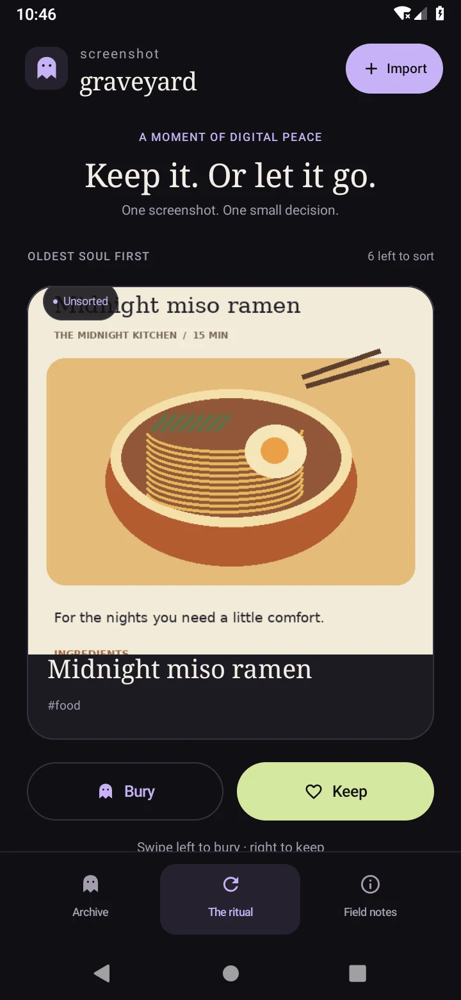
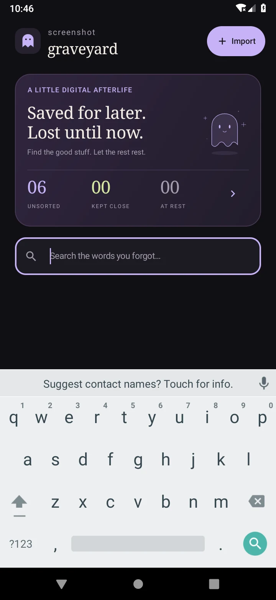
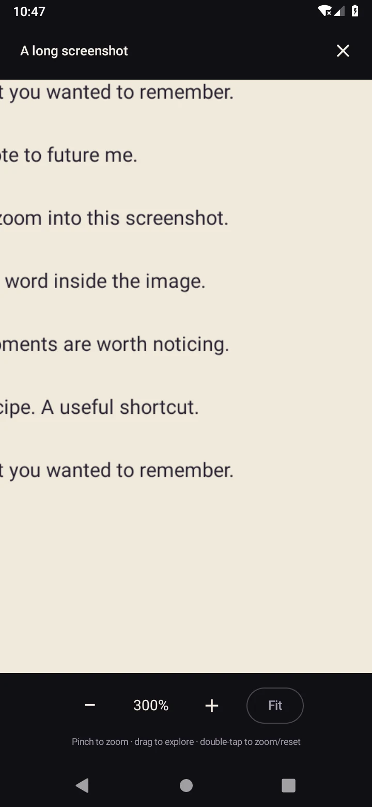

Save what caught your eye.
Import selected images or share them from another app. A content hash catches exact duplicates before they clutter your archive.
A LITTLE DIGITAL AFTERLIFE
You saved it for later.
Let’s make later happen.
A native Android app for the recipes, rabbit holes, and lines of code lost in your camera roll. Find the words inside them. Keep the useful ones. Bury the rest.
v0.2.0 · Android 8.0+ · No account or API key


SMALL APP. THOUGHTFUL DETAILS.
Import selected images or share them from another app. A content hash catches exact duplicates before they clutter your archive.
On-device text recognition makes screenshot contents searchable alongside titles and tags. No upload, backend, or account required.
A swipeable ritual helps sort the oldest saves. Burying is reversible. Removing an archive copy leaves the original image alone.
NEW IN v0.2
Tiny text deserves a bigger moment.
Open any screenshot full screen. Pinch to zoom, drag to explore, double-tap to zoom or reset, or use the zoom and Fit buttons. Search also gets a compact layout, keeping results visible above the keyboard.

UNDER THE HOOD
Built to explore Android engineering beyond the interface.
Verified on an Android 9 / API 28 emulator. Broader modern-device and accessibility testing is still pending. Viewer decoding is bounded; very long images can be downsampled.
Read the validation reportTAKE A LOOK AROUND
Download the project and open it in Android Studio to run the development preview on Android. Six fictional sample screenshots let you explore before importing your own.
v0.2.0 development preview · Source download · Android 8.0 / API 26 or newer
Open the source folder in Android Studio with JDK 17 and Android SDK Platform 36, then run the app on an Android device or emulator. To build the separate Preview package, use ./gradlew -PgraveyardPreviewInstall=true assembleDebug. Android apps cannot be installed on an iPhone.
The app installs as Screenshot Graveyard Preview alongside v0.1. The apps have separate archives, with no automatic migration. Uninstalling an app removes its local archive. Burying an item is reversible; permanently removing a copy does not delete the original gallery image.